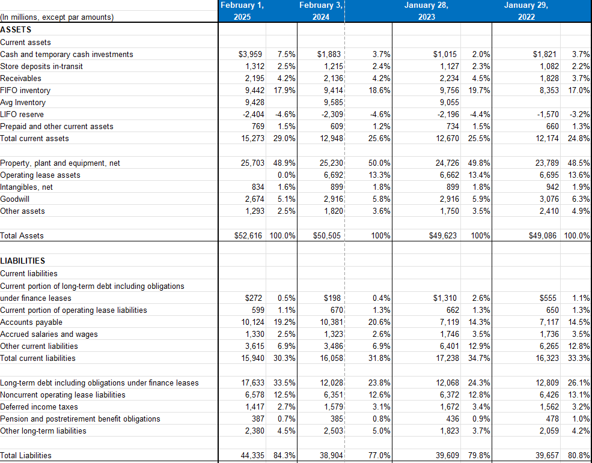

F
Finance
Financial modeling, valuation, budgeting, forecasting, pricing strategy, and financial planning.
My background combines finance coursework, economics, entrepreneurship, and self-directed technical projects. I am interested in work that requires analysis, execution, and clear communication.
I am a Finance major at the University of Cincinnati with a focus on financial modeling, investment analysis, economics, and data-driven decision-making. Outside of coursework, I build experience through Solid Comics, ACH DataWorks, and technical projects.
Financial modeling, valuation, budgeting, forecasting, pricing strategy, and financial planning.
Excel analysis, dashboards, Python, SQL, data cleanup, reporting, and decision-support tools.
Business structure, workflow design, compliance, documentation, inventory thinking, and process improvement.

I like breaking down messy information and rebuilding it into something useful. That could mean cleaning up a spreadsheet, building a pricing model, designing a dashboard, or creating a more organized workflow for a small business.
I am motivated by building things that actually work: businesses, systems, tools, and practical solutions. I care about long-term thinking, clear execution, and finding efficient ways to solve problems without overcomplicating them.
I follow business, economics, technology, and current events. I also enjoy gaming, movies, and coaching football. Football has been a major part of my life and influences how I think about discipline, leadership, and preparation.